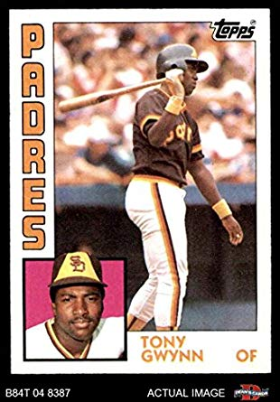
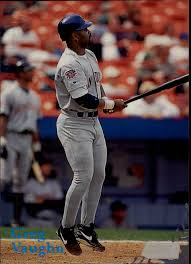
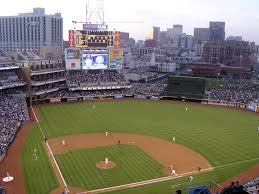
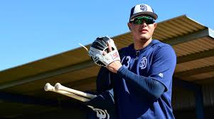

Padres Timeline

Tony Gwynn leads Padres to their first World Series in 1984

Greg Vaughn powers Padres to the 1998 World Series behind 50 home runs

Petco Park opens in 2004 as the Padres' new ballpark

Manny Machado signs with the Padres for 10 years $300 million, marking the largest free agent signing in baseball history